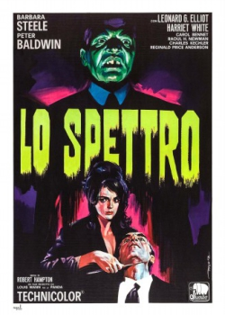
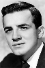

Also known as:Lo spettro (original title)
Country:Italy, 97 minutes
Spoken languages:Italian
Genres:Horror
Director(s):Riccardo Freda
Writer(s):Oreste Biancoli, Riccardo Freda
Video Codec:Unknown
Number: 74


Certification:R
Storyline:
A woman and her lover murder her husband, a doctor. Soon, however, strange things start happening, and they wonder if they really killed him, or if he is coming back from the dead to haunt them.
Cast: 


Medium: Original DVD,
Comments: Part of: 100 Greatest Horror Classics
Loaned: No
Aspect ratio: Unknown